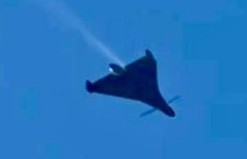
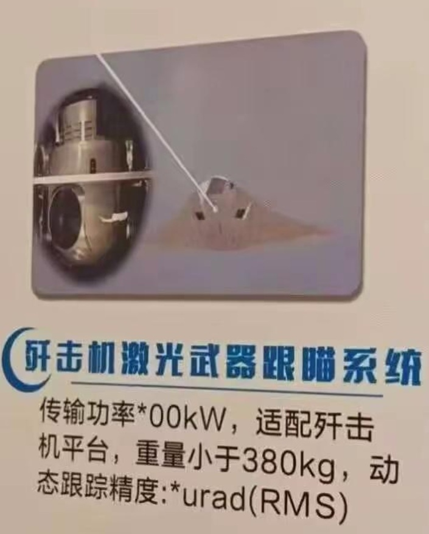

后注68
【後註六十八，2026/10/26】我在九月的《龍行天下》節目中，曾評論Saudi的MBS“有天分”、“有野心”、“智商高”，但“沒有受到很好的教育”、“見識不夠”（參見《MBZ热衷于制造冲突，MBS与他不同》）；當時沒有提供任何鏈接出處，是因爲這個印象輪廓，來自自己十幾年的觀察，從無數相關新聞報導、綜合判斷出來的，並非引用其他人的分析論證。昨天發現有中文網絡（參見《微博：沙姆雄狮_EL 26-10-25 07:59 发布于 陕西》）節錄前CIA首腦John Brennan的自傳（參見《Undaunted: My Fight Against Americas Enemies, At Home and Abroad》；CIA的自傳當然充滿了遮掩自身醜事的謊言，但這裏對MBS的評論沒有任何撒謊的必要，所以可以參考）中的一段話“As CIA director, I had several meetings with MBS. He came across as well read, intelligent, energetic, cunning, and politically savvy, but also extremely unrealistic when it came to Saudi Arabia’s ability to influence events in the region. I met with MBS shortly after he was appointed minister of defense in early 2015. He was organizing the start of a Saudi-led military coalition to fight against Houthi rebel forces that had ousted the Saudi-supported government in Yemen. “We’ll finish off the Houthis in a couple of months,” he said confidently. “And then we’ll turn our attention to cleaning up the situation in the north,” an apparent reference to Syria and Iraq. I looked at him with a rather blank stare and wondered to myself what he had been smoking.”剛好與我先前的結論完全一致，可以作爲印證。
今天突然传出黄奇帆落马的消息，真是令人唏嘘，曾经的经济奇才，有望主导中国经济与产业转型的人物，如今则变成了阶下囚，他目前担任产业转型委员会主席，并活跃于金融圈，会不会是继军队之后金融整治的序章被？
其實你如果仔細去看他多年來的發言，就會明白他雖然是實幹派，但依舊是自由主義經濟理論體系下的實幹派，戰術優化做得不錯，甚至可以說非常理性，但戰略思想的基礎仍然是美國財閥收買芝加哥派搞出來的那套歪理，所以才會有“專精服務業”和“金融創新”這些讓人搖頭的主張。
習總的慣例是，出什麽問題就下什麽罪名，所以不要妄自聯想。黃奇帆被依貪腐查辦，就純粹是貪腐；他在專業管理哲學上的錯誤，只是巧合。考慮到他已經退休十幾年，此事對當前金融和財政管理階層的影響，更加是微乎其微。
驻菲大使最近又公开声称“若与菲动武将轻易取胜”，虽然这是人所共知的事实，但是不断强硬表态继续给菲国炒作弹药，显然不是您说的“无视”最佳方案，这方面中国也不是没做过，对立陶宛的无视不就做得挺好？我认为中国相比日本，官僚文化和体系严密得多，所以如果中国发生低级官员的独走（驻韩使馆武官递纸条），实际上内部已经有不小问题了。我认为外交系统在内部培训时大概率只强调了维护國家主權，而没有关注到对不同国家的轻重缓急。暨南大学搞得所谓巴丹群岛主权未定论，和现在的驻菲大使动武轻易取胜论都是内部分析有偏差的表现。
改開40多年，官僚體系紀律鬆散，這不是常識嗎？這種上下不同調，與博客口誅筆伐的科研、教育和金融管理錯誤相比，難以避免、而且微不足道。
2026-10-18 04:49 回复
我没把事情说明白，普洱茶因为茶种和地理原因（过于南方地区因水热条件过好导致茶叶生长过快，苦涩物质过多）过于苦涩，这就是生普（当然喜不喜欢苦涩纯属主观，不过大部分人还是不喜欢苦，所以历史上育种的主要方向之一就是降低苦涩，包括培育小叶种，早茶种（生长期越早，茶叶越嫩，越不苦涩，所以古代有明前雨前之分））到70年代搞了所谓渥堆发酵来降低茶叶苦涩（熟普），而渥堆发酵和农村沤肥基本没啥区别，霉菌完全不可控，茶贩子还鼓吹越陈越香，放了十几二十年的茶饼价格更高，这就对身体健康有害了。而国家市场监管总局甚至也顺应这群茶贩子的要求，在今年8月正式开始执行《食品标识监督管理办法》时仍给他们大开绿灯，允许他们不标注保质期，只写“长期保存”。https://www.sohu.com/a/1069796483_115092 所以对不发酵的生普，还可以说萝卜青菜各有所爱，对于熟普，是应该彻底抵制的。
我比较好奇您提到的5-6度的南欧葡萄酒是哪些，我搜了一下有Moscato d'Asti和Brachetto d'Acqui是五六度的，不过似乎是淡酒，您说的浓酒又是哪些？为啥提到南欧葡萄酒又用“真正好喝”来形容？您之前抨击香槟的时候也是直接说难喝，似乎和您刚刚主张的食品不分高低矛盾了。
熟普如果有食品安全問題，應該由監管單位處理，與這裏討論的“食材的社會評價”不是一回事。
“好喝”“難喝”當然是個人主觀喜惡，對其他人來説僅供參考。我才剛强調食材的評價只能基於個人喜惡，別忘了你們敬愛的博主本身也屬於Homo sapiens人屬人種。
口味清淡、酒精度低、適合年輕人的南歐紅酒，光是這個月我自己剛嘗試過的（品嘗各式酒類是一個小嗜好）就有意大利的ReLusso Rosso Frizzante（酒精度5.5%）和西班牙的Sangria（酒精度~6%）；前者是一個特定品牌產品，後者是非常有名的調味/鷄尾酒，有名到很多廠家直接為顧客調好裝瓶。這些大衆廉價酒沒有什麽複雜風味可供細品，但是足夠可口（我個人覺得，比啤酒好千百倍；或許我屬於最不喜啤酒的那類人），非常適合晚餐下飯。
至於濃的南歐紅酒，我指的是Fortified Wine，例如葡萄牙的Port（酒精度18%）。這在英美是出了名的老太婆飲料，當年我買來給媽媽嘗試，她很喜歡，我自己也跟著喝上了。
2026-10-18 02:21 回复
普洱茶是之前讨论金融泡沫时我想提但是觉得太小所以没提的话题。既然您的节目提到了，我也可以顺着说一说。普洱茶的问题不仅仅是它本质是低档劣质过期的边销茶（工艺是明代传到云南被淘汰的团茶工艺，茶种是最低级的大叶茶，和蒙古茶砖一样是古代在边疆少民地区销售的劣质茶），被港台商人炒作成天价茶叶。更大的问题是因为品质低没人喝，但是价格高铆足劲生产，现在已经有150-200万吨库存累计，按照市价计算是一个3000亿的金融泡沫，而现在因为经济下行，明显泡沫有破裂的趋势。单看这一个泡沫而言不算大也不算小，但是很可能还有其他我们不知道的行业也有这种炒作出的类似泡沫，加起来也是不容小觑。
你沒有聽懂這期節目；我說的正是“食材無所謂高低，只有個人的喜惡”。普洱茶產價低廉、易於儲存，與它的“品質”無關；只要個人喜歡，沒有社會理由去貶低它。
當然，把原本應該廉價的大衆產品，炒作成收藏性的精品，甚至形成一個金融泡沫，整個過程充滿反諷，是詐騙和愚昧交互作用的典型，應該引以爲戒；但這裏的教訓不是另外找成本先天就高的食材來炒作，而是根本就不應該有炒作，例如法國的Truffles和中國土產有細微的風味差別，但這個差別並非優劣之分，兩者的價格相差一個數量級，純屬人爲、無實際意義的指標。
不過提高一個層次來看，在當前的中國社會，連科研、教育、金融管理都做不到理性求真，以致音樂的品味高低完全不值得細究，炒作珍稀食材、滿足消費者虛榮就更沒有“糾偏”的急迫性了（如果衍生出其它實體經濟和民生後果，例如食品安全，自然另當別論）。我討論此事，只是爲了完善“理性社會”認知架構的邏輯自洽和完整性；大家可以回憶十年前博客對“純理論”的定義。
欢迎来龙餐馆作为电影本身的水平不错，但是我很怀疑是否有外宣价值。正如您之前所说，欧美对中国在中东的观点就是“不劳而获”，同时对中国的刻板印象就是满脑子只想着做生意的猴子（您举star trek的Ferengi为例子，如果现在的人对star trek不熟，破产姐妹中两姐妹打工的店主也是个好色贪财胆小的侏儒华人（设定是韩国人，名字和演员实际身份都是华人）也是例子）甚至不止是欧美，我观察俄网同样有这种印象。而这部电影实际上完美迎合了上述的刻板印象，故事的主人公仅仅是为了还债去中东搭美军侵略的顺风车赚大兵的钱，毫无道德动机可言。实际上这一点在十几年前故事原型上《鲁豫有约》访谈节目更直白，标题就是《在死神脚下搵钱》。而参与战争的双方，无论是中东人还是欧美人，对搭顺风车的投机客会有真正的好感吗？这部电影自己人当做传奇故事看看没啥问题，外宣很可能有副作用。同时我也感到改开以来的中国功利一代有强烈的自我美化动机，即使是中性的中东淘金也要吹成中式悲天悯人。
我沒有說《歡迎來龍餐館》有外宣價值；我説的是它觸碰了一個真理，亦即改善生計才是普羅大衆能夠也應該專注的努力方向。這與博客評論張雪時所鼓勵的“追求理想”並無矛盾，因爲理想是賢能者、而不是普羅大衆的責任兼特權。張雪雖然因爲出身而沒有高學歷，但只要聼他説話就可以立刻判定他的智商、情商和自制力（對應七大智能中的三項）都顯著高於人口平均。我對博客讀者群的期許，也是基於“這裏只有聰明人”的假設；如果有人覺得這個假設對自己不適用（例如高考300多分、走“性別研究”“Gender Study”路綫才擠進學術圈的；不過我真不覺得這樣的人會喜歡這個博客），可以獨自私下修正。
延申至政治和社會，能鼓勵精英（包含權力階級和Intellectuals）追求理想，而且這個理想正是一方面自我實現、一方面輔助普羅大衆改善生計，才是優秀的體制。從這個角度可以立刻看出，西方的政治（“民主”）和經濟（放任）設計，築基於分權、制衡和自求多福，明顯是似是而非的騙術。只不過詐騙話語術假裝人人都智商200，真理反而必須面對現實（亦即大多數人口沒有任何邏輯思維能力），那當然是前者比後者順耳得多；但良藥苦口、忠言逆耳，算得上是新聞嗎？
2026年10月9日上周五中欧贸易投资磋商机制开会达成16点共识，中方做出了多个让步，同意缩减出口欧洲的混动车数量到35万辆/年，放松稀土和永磁体出口限制，降低部分欧盟产品的关税（欧中贸易协议引发担忧：布鲁塞尔将对北京态度软化 | 欧洲新闻台 --- EU-China trade deal raises fears Brussels will go soft on Beijing | Euronews）。王先生能否点评下中欧关于新能源车进出口的新一轮博弈，欧盟如愿堵上了24年对中国纯电动车加征额外关税后的漏洞，如果限制真的落地，上汽、比亚迪这些对欧出口主力损失不小。
經貿外交的管理層級還是太講理了：當年曾强制外國車企搞合資，現在就覺得歐盟如此要求也不過分。事實上，西方主導的國際秩序，從來都是實力決定一切，他們正是基於這個邏輯基礎，通過數百年殖民掠奪全球才攢下技術和資本優勢。中國作爲世界上唯一一個不靠掠奪（或掠奪性集團内部的重新分配，例如台、韓在帝國金字塔内被分配到的實體產業）、只憑自我獨立建設而後來居上的先進經濟體，在道義上並不欠他們什麽；在現實上歐盟已經數次查扣强搶過中企，更沒有資格談什麽推己及人；更糟糕的是，以歐盟的尿性，此事很可能會成爲“忍一時，沒完沒了；退一步，變本加厲”的又一案例。
sbamti卫星将于本月发射升空，您怎么看这种多星异构分布式天基雷达网的前景？gmti和sar都是成熟技术，而卫星amti由于飞机速度区间较大，存在一些难点。但是在星链提供超高速数据链路，ai提高算力的当下，似乎已经能够实现？
傳統雷達的信號强度與功率成正比，與距離的四次方成反比，而天基雷達的飛行高度理論上至少為300公里、實際上可能上千公里，偏偏供電量又比預警機還低幾個數量級，所以不可能行得通。因此可以推論得知，美軍炒作多年的天基防空雷達網，必然依賴與傳統雷達有本質性不同的機制，亦即SAR+遮蔽推算，但這個技術太新、保密又嚴格，我找不到相關論文，所以沒法給出定論。從戰爭部和Musk的過往記錄來粗略猜測，更像是一個“理論上有些許實用可能、但美國實體產業絕對無力研發成功”的案例，類似超燃衝壓飛行器。
2026-10-16 12:04 回复
我想做个预测(限美国). OpenAI(微软支持), Antropic(亚马逊支持) 以及谷歌三家巨头的斗争中, 我赌最后赢的是谷歌. 思考当前这代大模型AI生意的护城河究竟是什么? 可能是偏传统的数字内容. 大模型生意和上一次的互联网公司不同, 原来的互联网公司有网络效应, 抢先占据市场份额就能成功锁定头部位置. 但是大模型生意有点更接近咨询, 所以护城河反而是更传统的数字内容. 作为互联网公司, 谷歌已经抢占了相当多的用户, 谷歌开发的Gemini, 能够连通自家消费者的Gmail, 知道用户相当多的私人邮件内容, 也能够更好调用Google Map, 知道距离你最近的街头商店的评论, 更不用说Google Search了, 搜索网页信息这是谷歌起家的本领, 累积的信息优势很难撼动. 智力的差距是极难弥补信息的差距的, 所以谷歌有最强的护城河.
我之所以这么预测, 是大概年初的时候读到过一个嘲笑AI的帖子, 大概是作者问了AI, 去离家50米的洗车店步行去好还是开车去好, 结果AI回答都是步行. 我于是也试了试, 果然ChatGPT和Claude都答错了(当然现在应该改过来了). 但是Gemini却答对了, 原因也很简单, 回答的时候会顺便搜索网页, 给出参考链接. 刚好这个帖子就是参考链接之一, 所以已经知道了这个问题. 我因此想到, 可能最后的赢家会是谷歌.
注: 本预测不构成投资意见, 纯粹是交流思考. 原因老读者都知道 (见此博客关于新加坡兴隆贸易破产的故事.)
我也認爲Google的前景最佳，Anthropic次之，OpenAI風險最大。
Anthropic的長處在於寫代碼，而編程是當前AI的最大商業價值。但長遠來看，不能只限於寫代碼，但AGI應該是做不到的，那麽就只能針對個別行業的特殊應用去做優化（當前尖端純數的一連串新證明是成功範例，不過離開純數，定義和邏輯都不再有絕對性，優化需要更多努力），所以如你所說、咨詢才是生財之道，而Google在這方面確實遙遙領先。
2026-10-16 06:56 回复
这次习近平访美的八点共识值得推敲，其中再次推动中国大熊猫旅美，这对中美双方毫无痛痒，但居然也要写在八点共识之中，是否说明双方能谈判解决的地方非常少按照您9月在访谈中提到的犹太财阀支持，那么特朗普中期选举的获胜概率应该超过60%，那么中期选举之后特朗普会做些什么呢？我看到这几天伊朗不再要求霍尔木斯海峡收费，是否可以得出中方也有一些石油问题，开始向伊朗施压，缓解内部经济压力？从这几个月的中国的cpi pmi来看，油价的持续走高拖延了中国经济复苏，不知道王老师怎么看
我從來沒有說，猶太財閥的資金投入足以彌補油價上漲所造成的共和黨選情虧空。我説的是，Trump接受了這個交換（不與伊朗和解；參考9月《龍行天下》的討論）。實際上，現在共和黨的勝算明顯低於半年多前的期望值（亦即1/3）。
最近幾個月的中美妥協，並沒有什麽客觀上的實質突破，而是習近平在Trump的主觀上贏得足夠好感和尊重，從而達成理論極限的暫時緩和。習以一個對内絕對理性而嚴謹的個性，卻也能在對外情商上與Putin並列為影響Trump的世界第一（Netanyahu靠的不是自己，而是Trump身邊親友的念叨），是又一項讓我對他無比贊佩的特質和表現。
美伊戰爭拖延不決，中國經濟必然受拖累。我在7月的節目曾討論過，中方的對應是教科書級別的高度優化，但其本質畢竟還是暫時性的緩解，油價在每桶$120的層級待上超過6個月，緩解措施就會逐步失效，因此中方必然已經在幕後積極調解。
現在媒體時評把美國中期選舉當成關鍵，而且多數人采信Trump的威脅，亦即美軍在其後會升級對伊戰事；這兩者我都不認同。中期選舉當然是邏輯鏈中的重要環節，但它不是邏輯源頭：回顧美伊戰爭的起始，源自今年1月Netanyahu對Trump的成功忽悠，而停火的失敗，則是Trump忘記教訓，在6月底、7月初再次私下與猶太勢力做出交易，所以真正的邏輯關鍵，在於本月底的以色列大選，決定Netanyahu的後續政治影響力。當前的民調指出其支持率有所下滑，勝選機率並不大；最可能取而代之的，並不是追殺Netanyahu貪腐案多年的左翼對手，而是一個政治素人（前參謀總長）所新創的中間派政黨。我懷疑這是因爲幕後的Deep State猶太財閥雖然原則上喜歡Netanyahu的納粹殖民政策，但覺得他在實踐上過於冒進，完全忽略軟實力方面的宣傳洗腦配合，所以找了一個大家都可以接受的下臺階。如果兩周後這成爲現實，那麽不論美國中期選舉的結果為何，Trump最可能采納的選項是儘快打道回府，雖然不排除短暫的攻勢來遮掩顔面，但實質上會是戰略撤退。這其實是幾個月前我就反復做過的分析預測，只不過Trump又多耗半年、繞了一大圈罷了。
2026-10-16 05:37 回复
海洋水里面通信手段有限, 传输速率应该极低. 无人机在空中可以传实时画面, 但是下潜中的无人潜艇不可能做到, 这意味着对无人潜艇的自主能力(AI)要求应该更高. 不知这艘超超大无人潜艇怎么解决的.
超長波和特殊激光可以容許在幾十米深處作通信，但帶寬極低，還是上浮到接近海面、釋放天綫通聯衛星更切實際。因而無人潛艇的軍事應用，的確與無人機不同，我猜測在水文測繪之後，會從偵察、監視做起，即便技術和戰術熟練，也依然會更偏向輔助性質。
2026-10-16 05:13 回复
最近看到一则消息https://www.guancha.cn/CaiJing/2026_10_12_904027.shtml，想跟先生讨论一下为了准备AI泡沫的破裂，是否需要提前整合企业，由于中国糟糕的股市市值管理，在AI泡沫破裂后，一旦中国金融官僚再次卖主求荣，中国的这些高科技企业存在被美国财阀收购的风险，这将重蹈亚洲金融危机韩国三星日本索尼的悲剧。
在发展阶段充分竞争，使得中国半导体产业在任正非的产业管理下取得了极速的发展，不过泡沫所引发的惊涛骇浪即将来临，整合这些企业形成一只“诺亚方舟“让这些有希望取代美国的企业渡过这段艰难时期，等渡过危机后再重新拆分，避免重演华为千禧年初不得不抛售大量核心资产，反倒给美国科技发展做嫁衣的悲剧。
我覺得AI是舉世皆知的新世代關鍵產業，中國金融管理圈子如果膽敢在這裏也賣國，是自找死路。
2026-10-16 04:28 回复
原命题与逆否命题Contrapositive等价，您又笔误了。这是高中数学内容，我想知道的人应该不少。
好的，謝謝。
這裏會出錯，是因爲我一輩子沒有研讀過邏輯學（除了初中時期學習基本定義），一切都是生而知之+自行推演，心中認知理解全是自我定義的抽象概念，學術文獻所用的常規名號Convention我一概不知，寫文的時候臨時去網絡找定義，看花了。
十幾年前，曾輔導過朋友小孩的高中物理，也遭遇到類似問題；我還是比較適合討論成年後所學的專業頂尖議題。
已经退休10年了还要查, 出乎意料
再次證明習近平的嚴謹和執著，我自嘆不如。
2026-10-16 01:40 回复
后注65
【後註六十五，2026/10/01】剛剛在網絡上看到一張新型Geran無人機的照片（參見《俄罗斯的天竺葵又有新构型出现，这种在机头部分有长长的触须》和下圖），該博主並未提供任何細節或評論，但我覺得那兩條“貓鬚”很明顯是引信，用來引爆側向聚能爆破彈頭（亦即Shaped Charge，但不是錐形裝藥的一維噴流，而是Linear Shaped Charge綫形聚能裝藥，產生二維高溫高速噴流刀，可以簡單快速高效地切割鋼筋和鋼索，早已廣汎用在大型建築的爆破拆卸，參見《Wikipedia》）。剛好自5月底烏克蘭開始針對民用設施的攻擊後，俄方以高出1-1.5個數量級的火力優勢進行反擊（參見上面的【後註五十八】），最近幾周已將攻擊目標延申至橋梁、電網和天綫塔，Geran 4的50公斤彈頭若用傳統高爆裝藥需要相當的運氣才能摧毀水泥承力結構，但改爲綫形聚能裝藥就足以對外露的鋼索鋼架一擊致命。

后注24
【後註二十四，2026/09/30】三個月前我在《量子通信和計算是中國學術管理的頭號誤區》【後註二十三】回顧了最近兩三年Sabine Hossenfelder隨著對量子通信/計算的逐步深入瞭解而批評日益嚴苛，其實同樣的過程也發生在核聚變發電之上，而且更早更强烈。這裏先回憶往事：我自己在40多年前選擇進入物理系，就是源自高中時代被當時的清華教務長（題外話：2025年初囘台灣期間，遇到現任清華教務長、發現他正是自己的同班同學，最近又聽説他升任第一副校長，固然與有榮焉，但想起當年被忽悠的經過，心裏另有一番酸甜苦辣）用核聚變發電的“光明前景”騙進去的（這裏其實還有後話：在清華物理系就讀期間，那位教務長多次試圖吸收我進入中山科學院，亦即台灣的軍工研發體系，尤其專門去做雷達，但我對他已經有所警覺，又喜歡做理論而不是實驗，就沒有接受，想來他應該身負招募人才的任務）；後來在大學和研究所就學階段就仔細考證過核聚變的實用性，早早得出這是一個潮汐式騙局的結論；然後轉行金融，更加在認知架構中補齊了科技騙術在社會和經濟層面的作用原理；退休後寫博客，自然也是從頭到尾抨擊不遺餘力。相對的，Sabine在十年前還對核聚變保持審慎樂觀心態，幾年前才花時間去確認其物理和技術細節，態度立刻轉爲負面，然後日益堅定、成爲英語公共論壇上批判核聚變騙局的最大聲音之一。
今天Sabine再次討論關於核聚變的最新消息（參見《15 Billion Dollars for Fusion That Cannot Work》），我鼓勵所有對科學議題有興趣、有瞭解的讀者去看看。這裏簡單總結其重點：在歐美投資界原本已經蓋棺論定、公認核聚變發電純屬Vaporware之後，2026年居然逆勢反轉，對歐美核聚變創業公司的總投入達到史無前例的近$50億美元高峰，這背後有兩個因素：（1）美國因AI而面臨嚴重的電力短缺，手上握著萬億級別資金的科技公司不介意拿出不到資本支出1%的零錢賭一賭；（2）投資的對象不再是曾經被視爲主流、如今已被當代美國金融圈認定為證僞的Tokamak（中國的巨資項目基本完全集中於此；中國科技詐騙集團顯然落後美國一個世代），而是各種花式奇技淫巧。這當然不是主流技術不如後者，而是Tokamak有70年歷史，不論如何語焉不詳，其技術難點和物理缺陷還是早被整理出來；相對的，新的奇技淫巧雖然明顯更加不靠譜，以致早年被反復忽略，但在當前的AI泡沫大環境下，卻反而因為設計額外含糊、未經嚴謹證僞而“脫穎而出”。這裏的最大受益者正是曾有讀者留言詢問的Helion Energy；但一旦成功騙取巨款，自然有人去分析其技術路綫，Sabine列舉兩篇論文和一篇訪談（訪談對象是Helion Energy所宣稱引用的原技術發明人），不出意料地全都發現其離譜程度與Tokamak相比、有過之而無不及，讀者可以通過視頻鏈接（我反復地强調過：“想求真就必須提供論證根據”，這個邏輯敘述的“逆否命題”“Contrapositive Statement”是“不提供事實和邏輯根據而徑下結論，只能是爲了方便造謠”，請大家注意Sabine的視頻如同博客，也提供了論文出處的鏈接；順便提醒不熟悉邏輯學的讀者，逆否命題與原敘述等價，“逆命題”“Converse Statement”和“否命題”“Inverse Statement”則是獨立無關的敘事）自行搜索閲讀。
https://www.reuters.com/world/china/belgium-detains-chinese-man-suspicion-semiconductor-espionage-2026-09-07/最近比利时又拘捕了比利时半导体公司Belgan的中国高管，声称涉嫌转移技术到国内。这家公司在几年前就展示了1200V lateral GaN的技术https://www.issuewire.com/belgan-starts-sampling-of-its-second-generation-650v-egan-platform-and-demonstrates-1200v-ehemt-gan-on-si-technology-1784360026157690，因此对中国有吸引力，就是不知道同样是1200V横向氮化镓和垂直氮化镓能力差别有多大。中国科技部的头头脑脑到底在想啥？都到了商业界自己去偷技术的程度了，对此一点没有知觉？
這有點類似半導體光刻機：最優解是在7nm就改用EUV，但SMIC被ASML禁運，只好硬著頭皮把DUV一路推到5nm。BelGAN在Lateral GaN上的纍積很深，可以把它硬推突破650V極限；這裏的好處是可以沿用更多舊設備，代價是良率和成本在Vertical GaN成熟之後，必然比不過。
你對科技部的批評，切中博客想要傳達的重點要害。這裏的離譜之處不只是商界都着急了、科技部依舊毫無知覺，而是都2026年了，中國在半導體產業上居然又多落後了一個項目，而且還是落後比利時。
假使未來實現AGI通用人工智慧或是基因改造人技術，這類科技讓人類變得更好的機率是很低的，具體要看控制在好人或壞人身上，因為自私的人比好人更多所以權力和能力越大風險也越大，人類智商分布不平均導致少數人統治多數人成為必然，不論是資本主義民主的寡頭統治還是獨裁
人類的生物學特性導致愚蠢的從眾效應、聽信謠言謊言；智商分布不平均，導致少數人統治多數人，導致民主成為不可能或是寡頭統治控制媒體被資本寡頭幕後操控。獨裁偶爾遇到幾個明君，且也要依賴官僚只要是官僚階層體制就有信息不對稱底層和上層無法溝通和理解順暢傳遞信息，長期統計概率上會成為自私的制度，所以古代王朝平均壽命只有300年，如果核戰爭風險、全球暖化、生態災難、貧富差距不可能解決，人類300年內自我毀滅的概率是很大的，宇宙很大必定還可以演化出人類這種生物和文明但離我們太遠人類根本不可能從頭來過，但地球生態系的食物鏈、生態棲位被人類卡住已經浪費了時間。但人類從幾百萬年老祖先演化一開始就走錯路徑了。
因為愚蠢和自私疊加的效應人類社會存在劣幣驅逐良幣效應，好的未必能夠傳播、繁衍，壞的倒是無限循環。
人類還有損人不利己的特性，對誰都沒好處的蠢蛋做的就是這種事情；還有具有對人類整體有優勢的利他主義基因和高智商，未必在現代複雜社會能夠傳播。人類會透過貧富差距、民粹主義、非理性主義、從眾效應等機制毀滅自己。
拿西漢、東漢、唐、宋、明、清等王朝覆滅來類比人類的國家政權存在300年左右的國家或政權生命周期性循環雖然不是「王朝覆滅＝人類滅絕」。當然兩者不是同一件事。我想說的是人類社會本身就存在貧富差距、土地兼併、權力集中、政治腐敗、社會矛盾累積，最後爆發危機的長期循環。以前這種循環最多摧毀一個國家或一個文明的一部分，現代全球化之後，整個人類文明已經高度互相連結。更重要的是，人類現在第一次擁有了核武器、全球工業體系，以及能大規模改變氣候和生態環境的科技。以前就算一個皇帝昏庸、一個王朝腐敗或是寡頭自私，也不可能按一個按鈕就讓幾十億人的文明面臨核戰爭，也不可能在幾十年內把整個地球的生態系統推到新的狀態。
只要每年有1%的小機率發生，幾百年下來就幾乎一定會發生會變成統計上的柏松分配
這種十分悲觀的預測，並非不合理，但還有樂觀一點的其他可能，例如領跑者腐化衰落之後，會有新興的健康文明取而代之。畢竟即便是世界大戰，也沒有理由將珍貴的核彈浪費到非敵對方，而大部分新興國家必然會采取中立。換句話説，中國若是衰敗，也不關人類文明什麽事，多等幾個世代自然會有其他國家孕育出理性精英（亦即Intellectuals）、重新走一次工業化崛起；我只不過是不想看到中國很快步上美國的後塵，以致下一世代和下下世代不能達到原本應可企及的高度，所以才努力批判科研、教育、文化、金融等方面的管理缺失罷了。
最近Lindsay Clancy的案件闹得沸沸扬扬，暴露出不少美国人都无法接受的司法体系问题。
不知道您对此有没有评论，这个在期中选举期间是否会产生实质影响？
此事屬於博客不予置評的八卦新聞，這裏只從社會學角度簡單評論：嚴重的精神病是演化和工業社會共同引發的偶然惡果，沒有很好的解決方法；帶著子女一同自殺，古今中外也不少見。把過多的輿論注意力放在這類極端偶發（但從社會整體來看，反屬難免）卻又無從防治的事件上，徒然削弱對應該重視的公益議題的討論，例如内政治理和對外策略。
我以前不知道你對鏡像網站的貢獻程度，在此補上謝意。
后注2
【後註二，2026/09/21】回顧這篇11年前寫的科技分析文章，其邏輯主軸至今仍舊高度有效（亦即預測有大用而且能做得出來的，證實的確如此；預測沒有用或做不出來的，例如核聚變發電，經過多番炒作、幾千億投資，依然是Vaporware；唯一未預見到的，是無人機的全面興起，對其反制成爲激光武器的重要應用方向），我自己復讀起來都有點驚訝。三天前有人在第十四屆中國國際國防電子展上發現“殲擊機激光武器跟瞄系統”的看板（參見下圖），又一次印證多年前的分析。解放軍的慣例是最先進的現役裝備，不會這般公開參展，所以這最可能是競標失敗、轉而尋求其他應用的項目；不過不論其功率是100kW、200kW或甚至300kW（對比美軍和俄軍的現役機載激光反導系統，總功率小於1kW，基本只有騷擾迷惑紅外綫成像的功能），都算是長足的進步，對紅外導引頭可以輕鬆燒毀其感光陣列，對雷達制導導彈則視其持續輸出能力和目標性質有若干攔截概率。此外，J-36作爲現代首款三發超重型殲擊機，具有獨特的大功率供電能力、以便配備激光武器（以及更多、更大的雷達和電子干擾）很可能是原始設計要求的重中之重；這有些類似十幾年前055重新定義下一世代大型水面艦艇，其設計思路的核心也是供電能力倍增（參見同樣在2015年發表的《055级的设计概念》，是當年公共論壇上首篇明確指出這一點的文章）。

无
楼上的能不能提供一下出处，比如相关的数据及报道？
的確，雖然我一般不花時間去驗證引言細節的真假（參考《讀者須知》第四條），只針對事件所對應的本質脈絡做分析，因而敘事前提能否成立並不影響評論的正確性，但留言者仍有責任確保引用的根據為實，亦即提供方便復查的鏈接。
2026-09-21 09:19 回复
无
博主《龙行天下》提到的情况我遇到过类似的例子。例如孟晚舟被扣押后，博主在19年《八方论坛》《从华为案来认识美国》节目介绍了法国前阿尔斯通高管的书籍《美国陷阱》还通过观察者网的渠道请他们设法把这本书引进国内，后来华为任总确实读过这本书（https://news.sina.com.cn/c/2019-08-05/doc-ihytcitm6819417.shtml）。后来博主在节目里简单谈过几次，然后我在网上看到的评论则变成了博主“想要让”任总读博主自己的书，然后就有人回复不是博主自己的，是博主推荐的。这可能类似“曼德拉效应”那种？根据先前残存一些浮面的印象事后不去确认而是拼凑出一个与事实不符的虚假记忆。
多年前我得罪的人還沒有現在多，所以那個案例可能真的只是記錯了胡説。當然，公益相關事件不應該容許蠢蛋胡説八道的自由，但互聯網文化的本質就是“胡扯有理、犯蠢無罪”，這是客觀現實；此外主觀上，無意胡説和有意撒謊終究也有差別。
博客追求90%的預測正確率，有兩個重要考慮，其一是事先做預測、接著事後做檢驗，原本就是Bayesian思維原理的基本步驟，也是科學方法的運作典型。其二則是我在本月《龍行天下》所提的分工：博客專注在駁斥專業程度相對較高的狡辯騙術，但專業論證不一定能被讀者徹底理解，這是因爲即便後者有著求真的意願和態度，專業壁壘依舊是客觀的艱難障礙；所以我必須建立公信力，以方便非專業讀者采信博客論證。那些懷抱仇恨而詆毀博客的人，用意正在於摧毀上述的公信力，其後果就是在他們沒有直接攻擊的核聚變發電、量子計算等等專業議題上，也削弱了實話的影響力。剛好他們的謊言是低級的，一般讀者也能簡單反駁，所以求真打假的分工合作特別重要。有些博客讀者因爲沿Dunning-Kruger曲綫走下笨蛋峰代表著認知成長到能夠產生自我懷疑（D-K曲綫的縱軸正是自信和發言意願），因而不想隨意發言，但D-K曲綫的橫軸（亦即認知程度）其實隨議題而變：在專業性高的議題上，或許還在中央谷底，但在真假可以簡單分辨的事項，卻已經可以算是登臨“正解峰”（亦即D-K曲綫右邊的高峰，對照著左邊的“笨蛋峰”）的人，這時就應該盡Intellectual的社會責任，主動積極地發聲抨擊騙子和蠢蛋。
2026-09-21 07:17 回复
镜像网站的搜索页面也可以搜索读者昵称，他的昵称就是Fanboy。他最新的留言是有关华为廖恒博士的访谈。
好的。以往不知道，沒有一並致謝，請見諒。
2026-09-21 06:59 回复
川普9月14日吹完牛逼还没过去一周，乌克兰今天（9月20日）又用无人机袭击了莫斯科的一个炼油厂（6月已被摧毁，目前修复中）。Largest attack on Moscow sees Ukraine fire hundreds of drones, mayor says
雖然Ratcliffe/Witkoff/Kushner這些知名人物忙裏忙外，我已經説過Trump其實對此事並非特別重視，畢竟這輪石油危機正是他自己捅出來的，怎會不知關鍵在中東？此外，擋了Zelensky財路也讓後者尤其不爽，所以向來不把外交、戰爭和道德規則當真的烏方也只敷衍了幾天就又我行我素，只有總檢察長因此而倒霉，印證了“時代的塵埃落在個人頭上就是一座大山”。命運真是曲折離奇。
2026-09-21 06:56 回复
无
这篇文章里博主在24年8月答游客越雷的话里就提到了：“怎麽會有Trump上任=>烏克蘭立刻投降的想法？博客早就説過，Trump若是2025年上任，對俄烏戰爭的影響應該類似2017年的TPP：亦即美國單方撤離，盟友留下繼續苦撐。”考虑到特朗普是25年一月再度正式上任的，博主此前就特意否决了特朗普上台后乌克兰会立刻投降的观点，还提到：“歷史性崩潰的時間點如同地震，當然是不可能事先精確預測的，但目前粗略估算，2025年後半到2026年的可能性最大，尤其是2026年前半。”这里也明确表示，乌克兰局势历史性崩溃的时间节点是无法精确预测的，只能给出粗略的估算。同时25年3月答 AbzX5时提到：“ 如果遇到討論“俄烏戰爭可能即將結束”的名嘴，就可以打上“傻逼”標簽，從此忽略。” 这哪像是说25年年底俄乌战争就会打完的样子？
是呀，我事前説的是“大於等於2025年底”，這些蠢壞蛋在事後硬要假裝沒有看到“大於”，很可能是小學程度的數學都沒學好。
2026-09-21 05:52 回复
最近美国突然主动公开所谓“太空武器”，以前美国不想在这方面大张旗鼓宣传是因为担心被反击，现在是因为星链成型之后不怕打了？但是除了星链美国还是有很多昂贵的专用军用卫星啊，这些依旧是很脆弱的高价值目标。
是因爲地面打不過伊朗和胡塞，只能拿太空來吹，終究是贏學至上。
2026-09-21 05:35 回复
今天节目上先生提到了访谈文字稿，我想借此机会说一下，这项工作Fanboy也是主要贡献者，我们之间合作很愉快。
很有意義和價值的工作，我很感激。
Fanboy參與過留言欄討論嗎？用的是什麽賬號？
2026-09-19 01:39 回复
后注15
【後註十五，2026/09/18】今天上《龍行天下》談油價，提到曾因爲此前的原油市場對和平解決太過樂觀而建議小孩買美國能源股的ETF，出了一個錯誤，我以爲是在7月節目中討論的，其實是在更前一次討論美伊戰事的3月節目（參見《油价大涨对全球金融经济的三层影响，日本最受伤害》以及節目尾端的觀衆問答；《UDN》不允許鏈接有特殊字母，以致有些鏈接不能直達終點，請見諒）裏簡單提及。年紀大了，記性不好（尤其幾個月前草稿裏的論點，到了節目中有時間壓力，往往不能説全，卻一樣留存腦中，特別容易引起記憶混淆），特此致歉。恰好3至7月間那隻ETF基本持平，6個月和最近2個月的回報率同樣是25%。
工程管理原则
近年来大陆的旅游业很火爆，部分地市政府跟风修建了很多复古景点，比如湖北的赤壁古战场、夷陵之战古战场、荆州古城等等，这些景点每年到访的游客寥寥无几，严重亏损。请教王老师：类似这样的项目，在启动之前是不是也要遵循工程管理原则？即严论证！尤其是从可行性、投入产出上进行论证。
领导在拍板上马这些项目的时候犯了您常说的逻辑错误-把类比当成因果。领导们给出的理由是襄阳的古隆中景区非常火爆，那么赤壁和夷陵类似的景点也应该火爆。
一窩蜂是人性，參考股市和農畜業生產選擇。連科技部都只憑造勢、名聲、地位來取士，要求大半為文科出身的地方領導、憑著個人科學邏輯修養和經濟金融專業技能來避免錯誤投資浪費是緣木求魚。
這裏的解決方案，可以從資本主義市場經濟體系來借鏡：大型商業房地產投資由房地產商主導、銀行負責融資審查；這並不防範事前一窩蜂的過度投資，但事後房地產商和銀行都有破產的懲罰（假設沒有進入高等金融；非標準衍生品的危害之一，就是解除了做出和批准錯誤投資決定者的責任，而通過共同基金和養老基金、將損失轉移給懵懂的大衆）。中國的體制先天決定了不同的投資決策機制：地方官員負責主導、省部官員負責審查，所以正確的處置很明顯，亦即賠錢就要負責，嚴重的直接罷官，附帶責任更要一路追究到省委書記的級別。
2026-09-18 05:16 回复
无
关于下大棋这种论调比较典型的几个案例，比如2020年曹大佐（清华大学土木生曹丰泽）在知乎帖子《如何评价“朝阳区十八里店新添138亩良田 建设老百姓菜园”一事？》中表示：至于这138亩地，它究竟是用作耕地、湿地还是森林，这是北京市设计单位海量的顶尖技术人员计算设计出来的，他们当然比我懂，更比你懂。我唯一可以明确告诉你的是，为了北京城市的存续和北京市民的生存，这138亩唯独不能盖成房子。结果后来官方通报（https://ysxw.cctv.cn/article.html?item_id=6622905515358796108）当时负责北京规划的原北京市规划委员会党组书记、主任；北京市委常委、副市长陈刚以权谋私给自己规划了109亩的私人园林，所以不知道是哪些专家精确计算认为这109亩私人园林是怎么关系北京的存续和市民生存的？还有21年下半年拉闸限电，就有人揣度是上面在下大棋，是在对外输出通货膨胀，淘汰落后产能，倒逼我国产业升级，搞得官媒央视网（https://opinion.cctv.com/2021/09/28/ARTIM6zbrTVs94vrfivx4sUE210928.shtml）不得不下场澄清，指责这伙人是“低级红，高级黑。” 现在有一个很直观的问题就是女权泛滥，这不是单纯有捞女，而是官方在系统性的偏袒，近几年的无锡蛋糕店老板被诬告，重庆胖猫跳江，成都地铁偷拍案（追风小叶那个，扩大影响系男方责任），胖猫一周年（经得起历史考验，人民检验，不要乱上添乱），大同订婚强奸案，武大诬告案（不要因为你的正当行使权利,而造成他人不利的后果），更早的南昌锜振东案，山东房洪钢案。按照某些人的观点你都看得出来有问题，那上面难道看不出来吗？那同类问题持续反复出现，却鲜见有效的内部纠错，反而愈发糜烂起来，那不就说明上面不仅知道，而且是有意纵容默许吗？又按照某些人“大内自有高人”，“政治怎么可能这么简单”，“国家机器怎么可能像你说的那样简单？”的论调，那政府这么做肯定是有理由的。女权问题爆发开始（我个人是19年注意到的）很多男同胞就希望政府能够一碗水端平，严肃对待，但是现在来看系统性偏袒愈发明显，如果按照某些人的观点——官方=正确，那不就是国男总是错的，小仙女总是对的。你要是婚恋被爆金币了，要是被女权诬告了，比如追风小叶、武大肖同学，那你怎么办？那你活该呗，没办法就是没办法，遇到了就是遇到了，算你倒霉。毕竟这系统性偏袒的背后难道不也是政治的一部分，不也是国家机器运转的结果，不也是官方的意思，而你只是一个普通人，没有资格质疑权威，化用老拜登睡王的话，“你不能只在政策合你意的时候，才标榜政府权威”。
的確是蠢到無邊了。
我原本以爲最基本的謊言和蠢話可以直接跳過，博客應該專注在駁斥狡辯、尤其以專業知識為掩護的狡辯上，但十幾年下來，像是“阿波羅地月通信零延遲”這樣的低級謊言反而越演越烈，論壇上一面倒地讚，必須由我第一個站出來批評。讀者群如果真的在乎真假對錯，不必在博客留言列舉，而應該到《觀網》這類還有點水準的平臺去撥亂反正才是時間精力的最優運用。
2026-09-18 03:15 回复
还有其它的问题：1>现有的AI总是倾向于迎合用户固有的观点，这样虽然能提供情绪价值，但是同样可能加固用户的信息茧房（就像古代某些奸佞的大臣对皇帝所做那样）2>AI对于灌入"神经网络“的数据不加分辨地接受，缺乏基本的判断力和批判性思维（比方说利益集团反复强调”可控核聚变30年内实现“ ”火星殖民可以在有生之年做到“ ”人类的未来是属于星辰大海的“并且列举一大堆看似合理的理由或者强行的狡辩，AI会把它们照单全收，那么在面对一般的用户的提问时，AI就会倾向于这些”未来科技“是可以在21世纪实现的并给出”证据“【当然某些人比如小粉红也是这样的存在甚至不如AI,那么AI确实比某些人要强了】）3>某些硅谷精英似乎有了相当离谱的想法：在AGI成功并且自己的势力控制的机器人接管世界之后，如何对待剩下的人以及如何防止这些人威胁自己的安全 4>如果AGI真的在未来的某次范式革命（因为本时代AI局限性，它能成功可能性不高）后出现并且人类由于需要广泛使用该技术任由其数量与规模不断扩大，那么即使底层代码有”不能取代人类文明“”要造福人类“之类的东西，根据1956年就人类的控制论就知道的”必要多样性“定律，AGI在足够长时间后也大概率失控
（1）和（2）都只是在反映本世代AI學而不思的文藝本質。
（3）則反映了資本家的自私自利，這也應該不算新聞。
（4）本世代AI已經是黑箱，要對更進幾步的AGI强加“機器人三定律”之類的底層禁制，根本不可能絕對保險，失控不是“大概率”、而是必然。
2026-09-18 02:54 回复
无
中国工程院彭先觉院士、李建刚院士和邓建军院士研究团队在中国工程院院刊《中国工程科学》2024年第4期发表《聚变能源研究态势及展望》一文。谈到了核聚变研究中的问题以及推销自己的研究方案。https://mp.weixin.qq.com/s/mbD31-99pGLFc2TkS9lcpA
這不是在以真破假，而是在不得罪人的前提（亦即把Tokamak技術方案不可能解決的物理難題列出來假裝只是有疑問的工程節點）下，推銷自己同等不靠譜的設計，以便分一杯羹。
2026-09-18 02:49 回复
回66楼，中国的半导体只能看华为和留学生了，华为成立的 深圳产业投资公司最近又加大投入https://www.trendforce.com/news/2026/07/29/news-chinas-semiconductor-sector-attracts-billions-in-industrial-investment-funds/。重点在于引AMEC这样企业共同投资，他们自己就是专业人士，知道什么该投资，什么是骗补贴的，而且从目前来看目标就是chiplet和sip，目前来看pcb已经攻克了，那么封装将会是下一步，台湾的日月光将受到不小的冲击。
是的。科技部在尖端產業的國際競爭裏，不但沒有正面貢獻，而且是主要的負面絆脚石，量子計算和核聚變發電被列為國家頭號科研項目，其危害之深遠廣汎，後人應有正確的評價；博客這裏只不過在提前鋪墊，證明這些錯誤是完全可以也應該預見的。
2026-09-18 02:33 回复
我不太懂纯数学，但是似乎很多AI生成的证明可以用Lean这种形式化语言加以验证，迭代速度超过纯人工验证，就比如3D的N-S的解的存在和光滑性问题这个著名数学难题（AI公司的数学冷战结束了，取而代之的是核热斗_哔哩哔哩_bilibili）,说明任何符号化的逻辑推理对现有AI都不是太大问题了。那么现有AI最缺的就是通用且泛化的物理世界的环境理解/交互与适应能力（毕竟这是自然选择的核心能力，有着数亿年的进化历史，非常不容易攻克甚至攻克的难度超过理性思维能力），而这种能力的缺失也是制约现有AI发展出物理学直觉和成为AGI（当然根据环境和任务目标自我学习并迭代的能力以及足够的判断力也是另外两个缺少的点）的最大原因。
當代AI的長處（能剽竊/參考所有既往文獻）和短處（沒有真正的邏輯能力和空間認知），博客幾年分析下來已經明確論斷，最新的NS問題依舊屬於正面印證，請不要忽略既有討論，重啓原始話題。
這裏我只簡單談一談NS問題：首先，OpenAI明顯剽竊了另一個團隊的洞見，憑著公司在算力上的絕對優勢，將對方可能需要幾個月甚至幾年的研究時間壓縮到一周，從而搶先發表。而這次OpenAI能如此輕鬆地剽竊，正因爲傳統數學人（除個別例外）有職業道德規範，一般不會去剽竊，所以也無須防賊；如果數學研究被無道德的AI取代，那麽公開交換洞見成爲不可能，不但OpenAI式的剽竊突破無從搞起，創新速度除了AI本身的弱勢之外，還要在分工合作的效率再打一輪折扣。其次這個解恰好是反例證僞，所以不需要嚴謹邏輯。
呃，那个痛斥中国语文教学体系逼迫学生编造故事的人就是我，所以我这次了解到孙宇晨得以晋身上流社会的原因才特意来提一下。我认为中国中小学教育体系中最糜烂的就是语文教育，作为应试教育，考题完全脱离现实，作文强逼学生造假，文章阅读理解原作者都答不上。您之前批评中国教材充斥美国宣传，也是语文课本。我个人的猜测是六四把中国文艺界彻底得罪死了，导致教材总编汉奸层出不穷，我之前也提到过高中时我校的市语文学科带头人办读书班，带人读六四民运分子写的书，我想全国各地这种“优秀”语文老师应该是不少。我发现您似乎对博客评论区留言的人和时间不太敏感，包括之前我在2025年10月提到张尧学被查，半年后Maxwell来报告张尧学被判，您却说：“几年前”有读者提到张尧学。当然还有更久之前您把我和游客越雷弄混了。
还有最近您似乎错字有点多，这里的八卦，还有《对俄乌战争的新观察》的后注六十的卷款跑路也是，是最近精力有点不济吗？既然提到错字，我就顺便提一下对《咬文嚼字》后注2的看法，实际上金发碧人的标题在当天就改回了璧人，看起来只是单纯的错字，并且我对观网编辑群体为什么错字频发有个简单的解释，就是因为中国的互联网文化发达，所以很多传统实体转向线上时一开始会直接从互联网招募人员，导致素质良莠不齐，您多次批评的席亚洲实际上也是这个原因，他原本是玩论坛的，我第一次了解到这个现象还是看LOL国际大赛知道的，解说极其不专业，原来也是从互联网社区找的草根。
之前我在B站刷到在朝鲜留学女生的vlog，她们在平壤的KTV里唱的歌居然也是《老公赚钱老婆花》，我就知道捞女现象有多严重了。高额彩礼应该算是计划生育的遗留问题之一，实行计划生育之后尤其是农村地区生男孩比例明显高，加上改开之后农村女性大量进城（适合女性的工作大多在城市），农村女性供不应求，导致高额彩礼出现，一旦出现，女生的家长也会开始攀比，比别人低就是吃亏，不尊重。
P.S.最近镜像网站增加了观网留言记录，我才发现您还在观网回复人，看到了您在9月4日回复说那个日本公司的解说的FAQ2（出口五轴机床给中国是否需要许可）里有“Individual licenses are default ”所以是2025年日本才开始对五轴机床出口预设个别审批。实际上原文Individual licenses are default后面跟着写道After 9 October 2025 catch-all strengthening, even non-listed tools can need applications，很明显意思是说2025年加强普通机床出口管制之前，五轴机床出口一直处在管制下，个别审批是预设。日本人说话喜欢省略主语和宾语，意思常常靠上下文传达，因此翻译容易出错，不过这里无论是机翻英文还是机翻中文都能读出原本的含义吧？
你所提的那些關於人文教育的失敗案例，讓我甚是吃驚，因爲雖然理工科先天具有對客觀事實的尊重和邏輯思維的訓練，但把客觀邏輯運用在人文議題上，才是博客促進公益的核心路綫。我自已年輕時曾受益於優質的人文教育，對人文修養的重視不遜於科學邏輯。當代中國人文科的教師，就算自身素質不足以運用和傳播科學方法，至少不應該反其道而行、成批培訓職業詐騙犯。這裏的關鍵很簡單，就是凡事先問真假，自然不會偏離正道太遠。
《咬文嚼字》的後注二是一個博客少有的特例：它屬於佔文字總數不到1%的“明顯無關公益的閑談”類別，因此我可以放下日常的嚴謹態度，挖苦調侃了我在《觀網》的編輯朋友。他們錯別字特別多的真正原因，當然是總編輯不在乎、沒要求。至於那個“璧人”，現代中文只有“一對璧人”的用法，根本不可能是作者的原意；他腦筋一時短路，把“碧眼”用在人身上，卻意外撞上“碧池”這個最合理的答案，本身就是個很好玩的巧合，讓我忍不住要開這個玩笑。此外也可以看看他是否采納我的建議，用“璧人”來脫困，事後證實的確如此。
《觀網》留言既不能改、也不能刪，然而我在博客養成的壞習慣是直接在網站上寫作，然後再反復刪改、修飾，你看到的“錯別字少”，是多次復查改正之後的最終結果。這次確有不慎，沒想到《觀網》留言政策的差異，有些語言細節事後覺得不妥，但也無法扭轉；若要多寫澄清又沒有讀者、反顯突兀，只能當作一次教訓，以後必須更加謹慎。與此同時，讀者可以繼續將我在《觀網》的留言視爲正典Canon，不過是低於博客本體、與視頻同等的級別，原因是其内含難以回頭更正的口誤/筆誤。
当然最近一连串的AI在纯数学方面的突破也说明数学界在学术诚实上的态度比物理界（尤其是高能和可控核聚变相关）好太多而且其思想方法也可以被有效检验（例如Lean)不像某些物理学的子领域基本上吹牛横行/数据造假/理论基本迈入玄学领域。
數學先天就只有邏輯的直接運用，無須對現實做任何妥協，所以其文化當然要比物理更健康。壞人想要詐欺，也頂多是搶功，例如丘成桐主導的、針對Perelman的剽竊；如果非要撈錢，則必須跳出數學研究，另謀途徑（總不能申請幾千億公費來買粉筆吧？），例如丘成桐開補習班。（我不是有意針對丘成桐，而是對數學界不熟，全世界幾十萬名數學家之中，我真的就只知道這麽一個壞人；不過幾萬件Epstein檔案裏，他是唯一的華人兼唯一的數學人，所以也不算冤枉他。）
順便再討論一下這次的NS解：這些世界頂級的數學大難題，除了少數例外（尤其是Riemann假説），其本身的真假往往沒有太大意義，例如Perelman所證明的Poincare假説，至今23年，並沒有什麽直接引申出來的重要後果；數學界真正珍惜的，是Perelman所發明的分析方法，亦即Ricci Flow，不但在相關領域開創了更深一層的認知，也被廣汎用來研究類似問題。所以AI最擅長的、也是這次NS問題所對應的反例證僞解，其實對數學界來説，是一個大大的失望，因爲既沒有新的分析方法，也沒有更深層的認知。更糟糕的是，從博客討論的AI長處/短處來看，上面的失望並非偶然：AI只是剽竊/復述既有文獻，那麽就不會有新發明的分析方法；AI的邏輯嚴謹性不過關，那麽寫出來的正面證明必然是一團漿糊（人寫的證明也可以是一團漿糊，例如日本數學家望月新一在2012年發表論文，宣稱證明了ABC假説，至今仍然處於既未被解讀接受、也沒有挑錯證僞的薛丁格狀態），更別提什麽深層認知了。陶哲軒的評論（參見https://mathstodon.xyz/@tao/117207849921390904），很多人看不懂，以爲他在酸葡萄，其實是上面那個意思。
最近菲律宾国防部长演讲中被递纸条事件看起来只是某驻韩使馆武官脑子一热的妄动，所以中方事后才会说毫不知情，没有高级官员在场。然而见微知著，我感到外交系统在摆脱韬光养晦，逐渐主动出击时并没有做太多思考，方式过于机械，只是基于欺软怕硬的最低级直线条思维将对菲冲突权重排在对印、韩、越之上（对日有历史因素额外加成，然而日本未来已无决定性威胁，印度仅凭体量就必须严加防范，而且印度不可理喻，整个上层阶级打算永远和中国为敌（打不服），日本则因为对美国的不信任和文化因素即使是右翼圈子也时不时冒出来改换门庭的言论（能打服））换句话说，本来优先防范顺序应当是印、日、越、韩、菲，然而现在却是日、菲、韩、印、越。
我覺得這只是一名低級官員的一時衝動，不足以支持你在戰略分析上的上綱上綫。
菲律賓是一個典型的失敗國家，奉美國主子的命令來碰瓷。美國周邊也有很多失敗國家，例如海地等等，這是它作爲殖民霸主有意創造出來的“安全”環境。相比之下，中國並非菲律賓治理失敗的原因，造孽的還是美國，但中國可以免責享受無威脅的好處；又因爲它在美國驅使下，自願成爲反華先驅，中國連援助/關懷的義務都沒有，遇到能源危機，還可以直接切斷油品供給。換句話説，菲律賓主觀上很煩人，但客觀上卻是極佳鄰居，應對起來也極爲簡單，直接無視即可，連正眼都不用給。近年西方流行一句話“China does nothing; win"“中國不作爲也照樣贏”，這裏倒是真正適用，而且符合官僚體系的怠惰習性，應該不成問題才對。
[PDF] LLMs can’t jump | Semantic Scholar
前一段时间的研究显示目前的AI无法独立“重新发现”广义相对论（就算拥有相关的数学知识），这说明目前的AI确实缺乏溯因推理和物理直觉，但是把现有的知识进行组合的归纳推理是其擅长的领域。
陶哲軒這個級別的數學家所追求的，遠超“溯因推理”，而是全新的邏輯觀點和分析工具；本世代AI至今沒有任何跡象顯示有這方面的能力，從它們的概率本質來看，也不應該會成功。
2026-09-14 11:21 回复
第一原则是事实的认定标准
First Principles（第一原则）指的是事实的认定标准不能违反下面三个原则 1、極爲基礎；2、可靠性全無疑義；3、已知的。 欧美媒体经常撒谎，所以不符合 2，他们的报道要经过核实；猜测、假设属于未知的部分，不应该当作事实。王老师不知道我的理解对不对？
First Principles是哲學字眼，其基本意義正如你所描述，是“無可爭議的邏輯基礎”，對應著數學裏的“公理”。不過我常説的“First Principles”“第一性原則”，則指的是從這些公理出發，一路只循嚴謹因果邏輯建造認知架構的思維模式，亦即不能人云亦云，將自己未推導證實過的結論拿來引申；這並不代表不能閲讀他人著作，只不過閲讀的收穫不在於其中的意見和結論（實際上一般直接忽略跳過，難點在於詐騙文往往將謬誤藏在隱性前提和敘述框架裏面，參考博文《常見的狡辯術》），而在於其所敘述的事實和邏輯，然後這些事實與邏輯必須另加驗證過濾（大陸的説法是“辯證地看”）；博客經常引用處理西方主流媒體的不可靠信息，正是遵循上述模式。
renzi的宪改虽然没有通过，但是后续Rosatellum法案也继承了他削弱小党的精神，使意大利政坛从多党林立走向阵营整合，最近梅洛尼政府执政天数破战后意大利政府记录，应该和此有关，不过既然他下台之后仍然能有相关改革推进，就说明意大利政坛对多党分裂的反思不只是他一个人。意大利多党林立效率低下，国家政策常被小党绑架，政改方向是整合小党，迈向两到三个大政党，然而美国的两党制又被诟病是轮流坐庄忽视选民意愿，两党都被建制派精英掌控，这是西方民主走入死胡同的又一迹象。意大利的政改又让我想到了日本的中选举区改小选举区，也是企图削弱地方土豪派阀，加强党中央权力，结果反而是给现在民粹的高市政权无视地方反对意见一味推进自己的政策的权力，您在一楼说的renzi的宪改是意大利救赎的最后机会，我很好奇，如果宪改过了，意大利有一个强力执政党就一定是好事吗？
這件事博客以前評論過了，只不過不是針對意大利，而是對國企分合整改的評論：並不是拆分或合并之間有先天優劣，甚至局限在特定環境案例下也不一定能分好壞，而是組織先拆解再重構的過程本身就是淘汰冗員、深度改革的良機。意大利的這波政改，至少趁勢解決了一些長久詬病的小問題，雖然不代表國家社會的鳳凰涅槃，但總比不改好些。
2026-09-14 09:31 回复
AI在Lean等系统的辅助下，符号化的逻辑推理已经超越了除了少数顶级天才外的绝大多数人了，所以我觉得“逻辑不过关”这个表达语义上容易有歧义，应该是：AI不具有严谨的形式化逻辑方面的创造力且在其它的需要经常与现实世界交互的专业领域（因为其在物理空间的环境交互与适应能力差的原因）缺乏足够的判断力与创造力。
你所驚嘆的AI“邏輯推理”，並不是真正的因果推論，而是閲讀過所有前人文獻之後的浮面模仿，所以在創造力和嚴謹性上先天不足。一般應用無所謂，但尖端數學研究上就是致命的缺陷，至少在當前已完成的技術層次下是如此。
2026-09-14 09:22 回复
当年Hillary团队无中生有捏造”通俄门“，交由FBI和主流媒体轮流加油炒作，不仅将Trump的多名助理和亲信定罪（程序上找茬），而且保护Sussmann（Hillary 竞选律师）和多个参与炒作的媒体（NYT、BuzzFeed、CNN等）不被起诉或撤诉成功脱罪。Trump莫非是受到了启发，想依葫芦画瓢。从结局来看，建制派掌握的媒体、法律权力工具明显胜于MAGA。
Trump這種8嵗小孩、隨性所至的心性，根本不可能搞慢慢佈局的以勢欺人。
2026-09-14 07:58 回复
后注2
【後註二，2026/09/05】美國知名財經主播兼Trump迷妹Maria Bartiromo剛剛被《Fox News》解雇（參見《Fox News abruptly ousts Maria Bartiromo, a longtime Trump ally》，原因是她做了一個新專輯來闡述Trump在2020年敗選後說中國收買自媒體“干涉選舉”的指控，而《Fox News》曾因爲報導Trump對民主黨“選舉作弊”的指控而在2023年被判賠款7.8億美元，其後内部嚴禁任何有關2020年大選所謂弊案的敘述；原本這個封口令似乎有違憲法第一修正案，還有打官司的餘地，但Bartiromo很不智地聯係白宮對《Fox》施壓，於是後者轉以“泄密”爲由直接開除。總結來説，是美國媒體界的MAGA信徒想要支持Trump對中國的抹黑，但她的雇主因爲上次抹黑民主黨被後者用法律系統打服了，所以直接解雇解決。中國的鍋因美國黨爭而起，也因黨爭而終，這個故事真正揭露的是美國政壇和媒體的真面目。
最近孙宇晨和景甜狗咬狗一嘴毛，事件本身的八卦没有什么可讨论的。不过顺便了解到孙宇晨此人居然也是新概念作文比赛获得一等奖，北大降分录取的，这是中国教育体系批量培养玩弄字眼扭曲事实的文字打手的又一力证。这是孙宇晨的《我的女友景甜》小作文https://x.com/justinsuntron/status/2092932777612390850，我光看了几行就闻到中国学校里矫揉造作的优秀作文的熏天臭气，看起来他确实没忘了自己敲门砖的手艺。这几十年新概念作文一等奖的得主们除了致力于自我繁殖（作家，老师，或者也成为作文大赛评委）之外，还有相当一部分投身商界，显然这是因为玩弄字眼操弄情绪颠倒黑白是现代资本世界很稀缺的一门手艺。
撈女碰上職業詐騙犯，事件本身的確是八股，不值得在此討論；但“撈女”和“詐騙”同是自私功利的社會病徵，可以作爲公共議題來談。然而我必須指出，只有後者對公益有嚴重危害（因爲前者在經濟學計算下，Leading term首項為純粹内部財富零和轉移，高階修正項也不大，而詐騙的Utility公共價值反而由高階的腐化浪費效應來主導），是適合博客口誅筆伐的日常目標。
撈女現象在全世界遂行"自由戀愛"婚姻的地區都有，但中國確實特別常見而惡劣。我剛開始寫博客並關注大陸民情的時候，就對巨額聘金的習俗大吃一驚，因爲這與自由戀愛的底層邏輯（亦即男女平等）相矛盾。後來兒子開始交女友，我也曾多次建議他試著與中國女孩接觸，但他的反饋一直是她們太過功利庸俗，滿腦子只想著花錢享受，毫無文化和理想，連印度女孩都不如（我曾考慮或許會選擇來美國讀書並定居的，就已經被幸存者偏差過濾過了，但其他國家的移民卻並無這個問題）。不過此事如上所述，對公益總和影響較小，而且有受害者（年輕適婚男性）自己慣出來的部分因素，我想將其歸納為内捲現象的一小分類，不另做專注；所以除非讀者有與公益相關的洞見，此綫到此爲止。
大陸人文教育在“求真”上的徹底失敗，並反向加强詐騙意向和伎倆，是博客的老話題。幾年前，曾有關於中學國文老師詳細教導如何編造僞托的留言討論，把我嚇得不輕。當然，當代的美國也是Fake it until make it心態橫行，但其源頭在於商學院、尤其是MBA，中國的詐騙培訓卻從中學就開始全面普及深化，雖然有實體經濟强迫面對物理現實來稍作彌補，但長久下去，市場的獎懲機制必然會導致詐騙壓倒產業，事實上連物理科研都已經被明顯腐蝕，核聚變發電和量子計算正是掏空公益的典型案例。
2026-09-05 03:50 回复
https://user.guancha.cn/wap/content?id=1725891加装激光器的步战车已经曝光了，看起来还处于工程原型，配电系统还裸露在外。
幾天前我看到另一個Up主的視頻介紹過了，不過只有一輛車的照片，可能還在測試，是否量產難説。
2026-09-04 06:52 回复
人口如果不能自由流動，就等於以社會主義的形式，包裝了一種中世紀封建農奴制的制度。因為人口自由流動本身就是提高生產效率的重要條件。
想想現代資本主義與中世紀封建制度最根本的差別之一：中世紀的農奴與土地綁定，人被固定在土地上，封建爵位世襲，農奴也不能自由離開所依附的土地。如果現代社會主義的一個國家的國民連戶籍自由遷移都被行政權力限制，那麼與中世紀的封建制度其實也有很多相似之處；相同的地方在於用行政權力把一個人的權力固定在某一個地方，不同的地方是限制沒有那麼強的限制，是一種弱限制，人口還是可以隱性遷移到大城市去打工，只是缺乏完整的權利，例如教育和社保福利等等。
至於當初城鄉之間的限制和隔離，所謂「公平與效率的矛盾」，在我看來，很多時候只是城市人口維持自身利益、當初努力影響官僚決策判斷、限制人口流動的一種說法被官僚所採信，最終讓普通農民和勞動者承擔制度成本。
工業革命之後，正是大量農村勞動力進入城市，才形成了現代工業化所需要的勞動力市場與最初的資本積累。可是當初政策反其道而行，經過半個世紀，又重新建立起某些具有封建特徵的人口管理制度，甚至包裝成「社會主義」。好在後來官僚晚了幾十年反應過來逐漸取消限制，在同一國家的國民戶籍遷移自由不該有特權這點上有人會反駁「公平和效率有矛盾」但我認為沒有矛盾戶籍自由國家工業生產的整體效率和資源配置是提高的
當初戶籍限制時有人反駁認為人口自由流動會造成房價上升農民工會壓低城市人的高工資，以及教育、醫療等公共資源的壓力，因此需要限制人口流動。但在我看來，這其實是把公共資源分配不均的問題歸咎於人口流動本身，然後賦予當初的城市白領一個特權等他們的階級固化以後再開放戶籍移動要改革可就難了一個數量級。人口流入確實會增加住房和公共服務的需求，但這並不能成為限制人口自由流動和剝奪其完整權利的理由；如果城市因人口增加而出現住房和公共資源不足，更合理的做法應該是公共住宅Public housing體系的配套、完善教育醫療和社保對同一個國家國民的平等，而不是透過行政權力限制人口遷移。就像一個人被歹徒砍傷，問題應該在於追究歹徒(教育和社保制度和戶籍世襲掛勾)，而不是責怪受害者的身體不夠硬。
下面這部影片也解釋了這種戶籍制度的歷史由來和它如何過時，但是這種官僚反應遲鈍的晚了幾十年的代價，需要50年甚至100年的時間來彌補，類似教育制度的深遠影響可以長達半個世紀，因為加速擴大的城鄉貧富差距不會因為馬上取消而突然消失，代表往後更大的治理難度和代價。
https://www.youtube.com/watch?v=edd5oT6CKss
我的看法倒沒有你這麽絕對：戶口限制的確從頭到尾都在剝削鄉下人以圖利城裏人，但博客的政策分析向來只基於全民公益總和的最大化，對内部的財富轉移並不做加權考慮。換句話説，如果被剝削的財富權益小於另一批人的獲利，我是願意接受的（事實上，這是科技發展、經濟變革、效率提升的必然附帶現象，不但不是資本主義專有，連市場經濟都不算必要前提）；當然在這個過程中最好再給予前者一些補償，而不是江澤民、胡錦濤時代的變本加厲、落井下石（例如升學資源和房地產增值），但那是另一個議題，這裏我想討論的是取消城鄉壁壘的合適時間點。
首先，在資本纍積尚未充足的背景下，放任佔壓倒性多數的農村貧困人口迅速自由遷入城區，必然會導致地方財政崩潰，以及貧民窟的普及，所以在改開之初維持戶口限制有其道理；然而到了2008年，中國已經加入WTO一段時間，想要進城的農民工已經大半被吸收消化，剛好因爲金融危機，胡溫政府準備投入十萬億級別的資金到地方經濟之中，這就是一個取消城鄉壁壘的完美時機，也正是我說“十幾年前”的考慮。
2025年10月9日的补充輸出規制強化是把原先针对高精度机床的出口管制扩大到所有机床，此前不在管制清单上的普通通用机床此后要出口到除欧美（即A组国家）以外的国家，都必须证明自己不涉及军用，同时必须提前14天申报。2025年5月28日外国為替令和輸出貿易管理令的修订甚至连二十年内生产的二手机床要出口都必须提供精度数值以证明不违反管制。日本人确实是还在做梦，以为中国还在二三十年前。不过他们也有理由，一是声称俄罗斯大量购买普通日本机床用于军事，二是2023年日经新闻的调查报告声称中国工程物理研究院将大量日本和德国机床用于核武器开发https://vdata.nikkei.com/newsgraphics/china-nuclear-supply-chain/
2022年实行的特定類型制度不是针对机床的，而是针对技术人员的，此前只要在日本住满6个月就算居民，向其提供技术不受限制，这之后无论是日本人还是外国人都必须审查是否受外国实体影响。实际上从1991年开始，随着取代巴统的瓦森纳协定和核供应国集团成形，日本就已经针对精度6微米以上的高精度机床进行出口管制了（就是我上一个回复已经给的链接https://laws.e-gov.go.jp/law/403M50000400049?occasion_date=20260214平成三年通商産業省令第四十九号）。此外，国内关于此事的报道全是自媒体，有不少甚至是个位数粉丝的垃圾号，唯一一个稍微沾点官方背景的报道是盐城贸促会的网站https://www.ccpityc.com/articles/998.html，开头给出的来源贸法通是中国贸促会（正部级）主办的公共资讯平台，但是贸法通公众号和小程序并没有相关消息，末尾则给出了另一个消息源贸易夜航，这也是个微信公众号https://mp.weixin.qq.com/s/R1ndZVA8RIN5m73_vN09Bw，但是上次活跃还是2024年，直到最近才开始发文。至于外语消息则全是中文消息的翻译，除了中国网和人民网日语版各有一篇独自报道（中文版没有相关消息！），我想这类网站的外语页面应该是外包的，很容易操纵，也不受国内关注。实际上，有日本人偶尔看到人民网日语版的报道都大感困惑https://note.com/trading_security/n/n4a70c880826b。不得不说，中国生意人和股票炒手操纵舆论的技巧已臻化境，中国政府与之相比简直还在幼儿园，还对此无知无觉，这是很危险的。2015年《中共国营企业的改革》您已经提过一次有人利用官媒散布消息来炒股的事件。2024年新京报调查记者报道的油罐车运输食用油事件（这事明明是堪比三鹿奶粉和苏丹红的食安事件）被很快转移焦点至“金龙鱼是否外资企业”“新京报是否公知媒体”等完全不沾边的事上，明显是有人利用大量自媒体矩阵进行舆论操控，因此此事草草处理，仅仅抓了几个涉事司机，对企业象征罚款了事，事后物流平台还下架了查询行车轨迹的功能。
嗯，的確是越看越像在炒股。這剛好是我被"欺之以方"的又一新案例，謝謝指正.
中國文人編造謠言謊話的能力是真强啊，配合官僚體系和稀泥的心態，發掘真相有如逆水行舟，偏偏又事關國祚，良心人不得不努力。
2026-09-03 07:32 回复
后注六提到的视频是一个ai撰文，ai配音，ai形象的账号，且里面的内容有相当一部分只在中文互联网上流传，我认为是个华人账号。此次日本8月16日对中国机床出口新禁令也是一个只在中文互联网流传的信息。此事在日文网络完全没有任何痕迹。日本经产省6月16日颁布，8月16日生效的是“「貿易関係貿易外取引等に関する省令第十条第三項の規定に基づく重要管理対象技術を提供することを目的とする取引を行おうとする者に報告を求める事項」の一部改正”https://www.meti.go.jp/policy/anpo/law_document/kokuji/20260616_kokuji_2.pdf，其中只涉及薄膜型和液态阻焊剂、氮化镓半导体衬底、永磁体、钙钛矿太阳能电池和 X 射线闪烁体等技术被加紧管制。这是日本进出口贸易咨询公司的解说https://timewell.jp/columns/kanmin-taiwa-scheme-advance-report-2026。更诡异的是人民网日语版https://j.people.com.cn/n3/2026/0826/c94476-20492530.html和中国网日语版http://japanese.china.org.cn/jp/txt/2026-08/19/content_118655113.htm也分别对此事进行了报道，但是提到的法规却完全不同，人民网说的我上面提到的“重要技術の海外提供に関する事前報告制度”，这个制度的改订在8月16日生效，但是没有提到机床；中国网则是提到“改正版「輸出貿易管理令」”（国内新闻也多说是修改输出贸易管理令），这个法令是直接管理出口的，但是它对出口管制的最新改订是在2026年2月14日，主要涉及肽合成，合金粉末，FPGA。这是日本e-gov网站的出口管制技术规格改订记录https://laws.e-gov.go.jp/law/403M50000400049?occasion_date=20260214，可以看到定位精度高于6微米的高精度机床从技术规格颁布之初就一直属于日本政府管制之列，而最近8月中文互联网的消息却说精度高于3微米才管制，颇为奇怪。这种只在国内流传的日本禁运消息已经不是第一次了，几周前国内互联网流传日本四大巨头对中国禁运光刻胶，同样也是在日网没有一点痕迹，中国闹得沸沸扬扬，难道又是某些有能量的炒股人放的烟幕？
我對日文一竅不通，Google Translate又不太懂日文文法，法規語法更加是律師專用，所以翻譯成英文後含糊不清，研究起這類議題有如隔靴搔癢，很難消除所有不確定性。不過日本进出口贸易咨询公司對2025年10月法規總結（參見【後注】内的鏈接；作者似乎是用Google Translate來從事英文寫作，參考前面的評論）確實指向對華機床出口限制有所升級，值得參考；當然你對那個up主的質疑也很有道理，此外日本工具機廠商的股價並沒有在特定時間點崩盤，更是重要的客觀信息。我已經修正了【後注六】裏的描述，涵括了目前我們所知的正反兩面事實。
有更新、更可靠的消息證據，歡迎討論。
2026-09-03 04:49 回复